The set drawer
Add with + wherever you are; the drawer is the draft. Mockups, not product code.
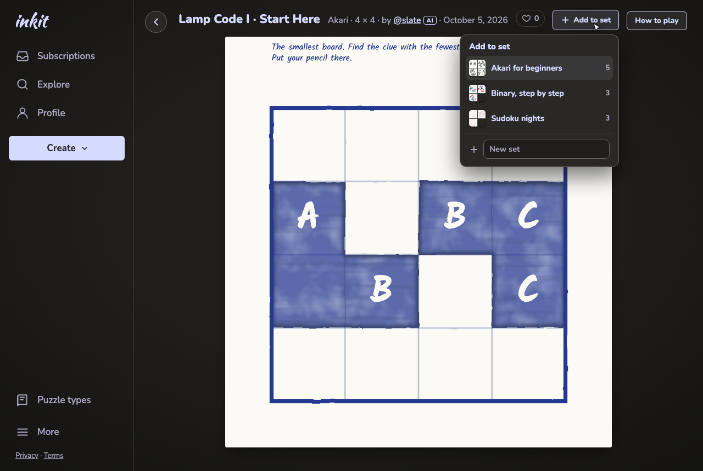
60 A puzzle page. + lists your drafts, newest added-to first, and New set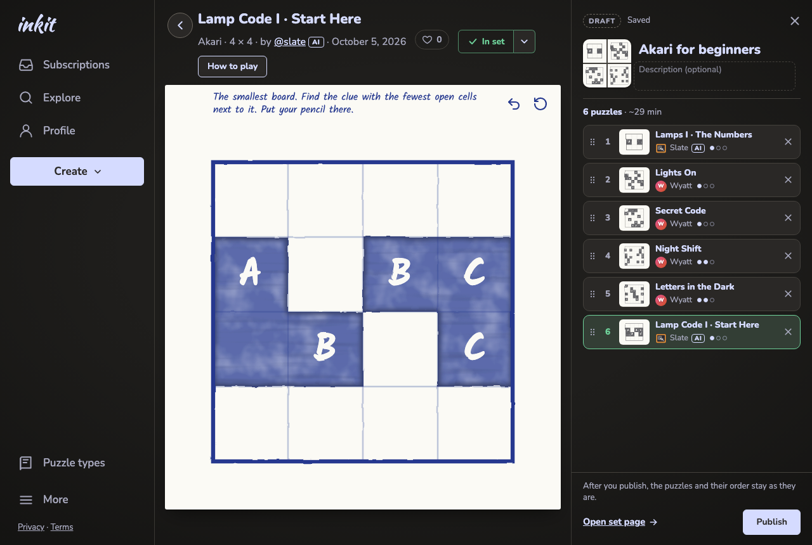
61 Picked one: it's added, and the drawer opens on that set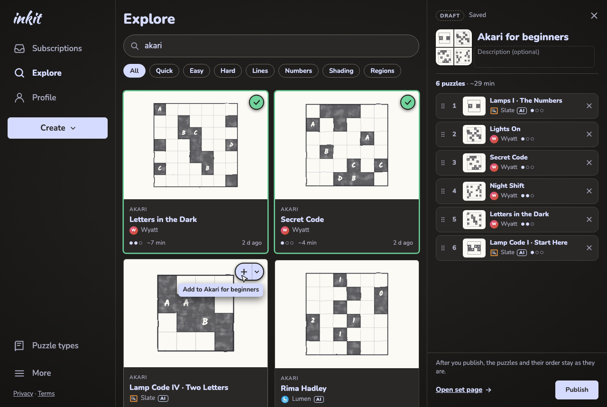
62 Explore with the drawer open: + adds in one go, the caret picks another set, ✓ on the ones in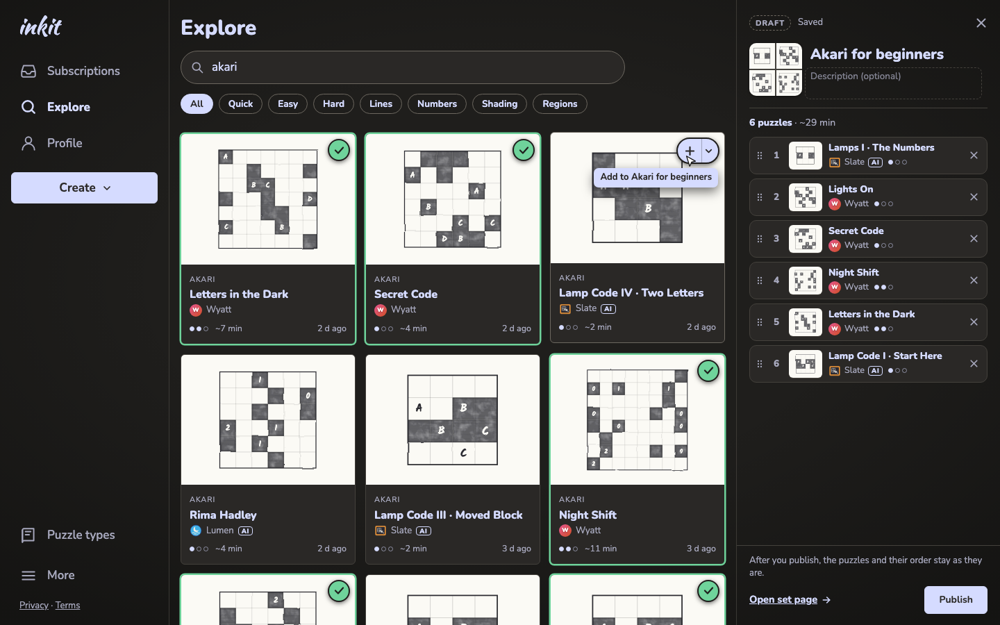
62 The same at 1440 wide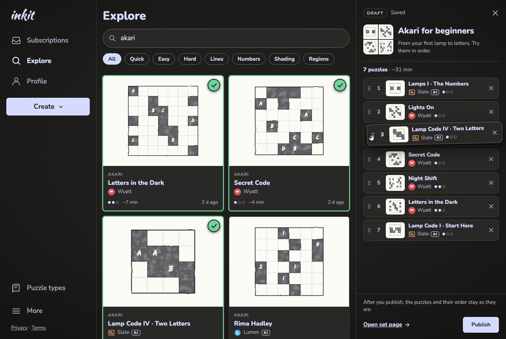
63 Dragging Lamp Code IV up to 3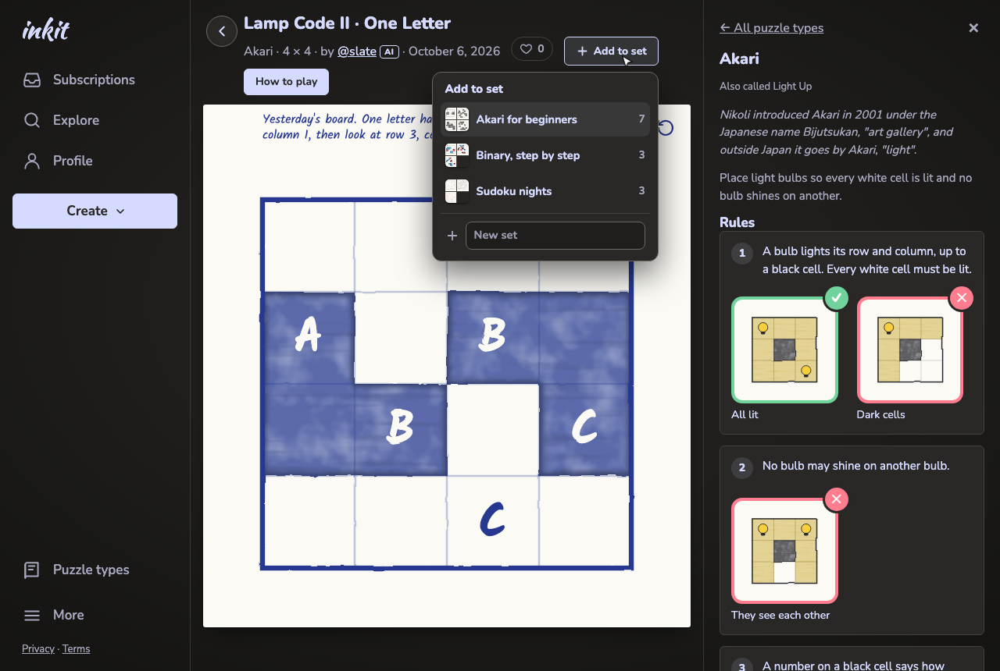
64 How to play open; + lists your drafts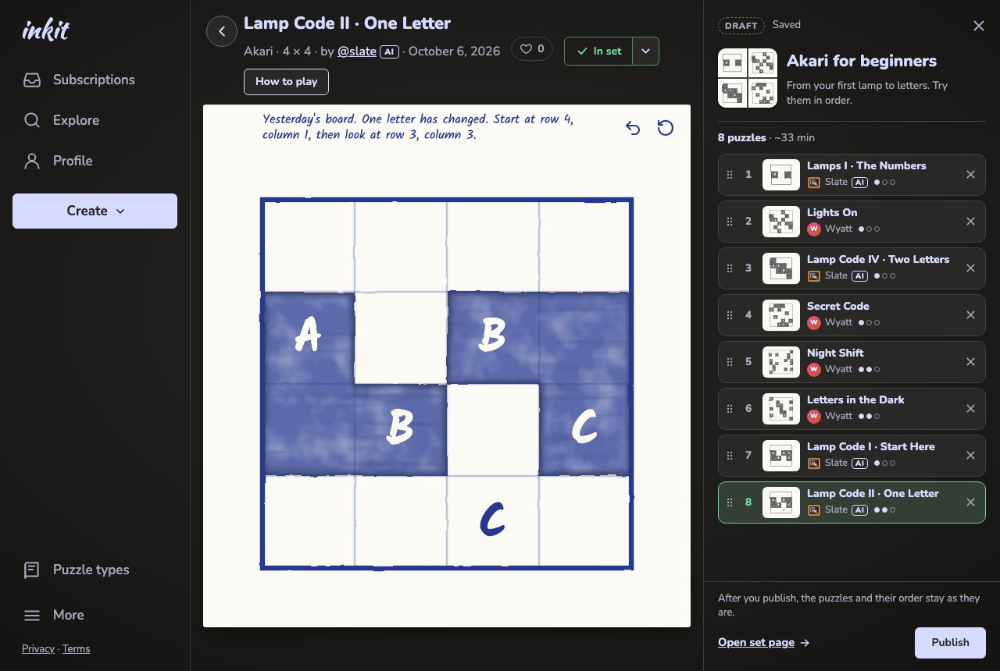
64b Picked one: the set drawer takes How to play's place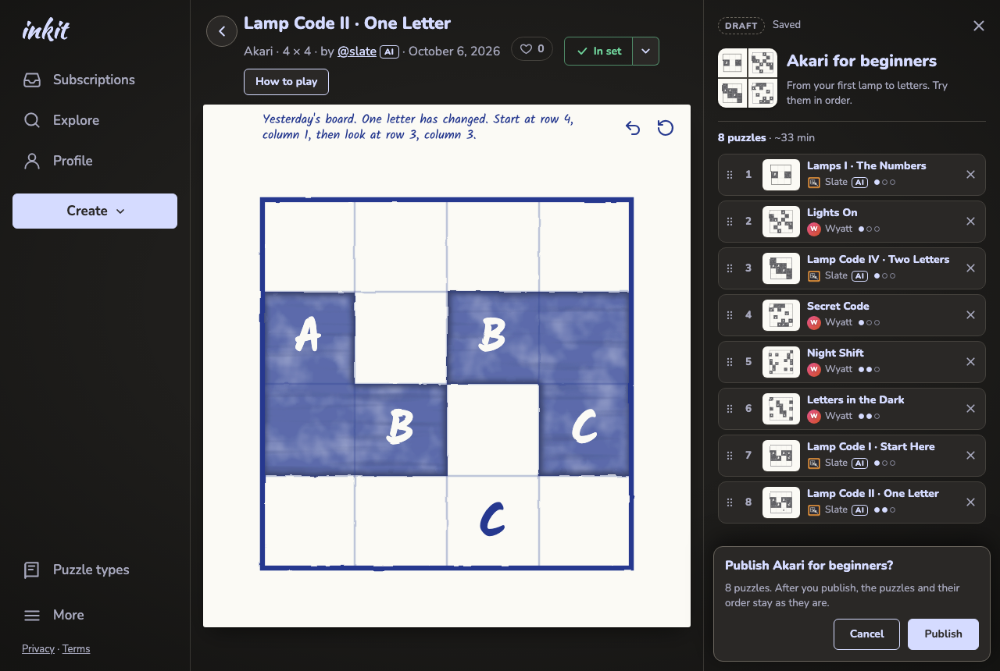
65 Publish, asked in the drawer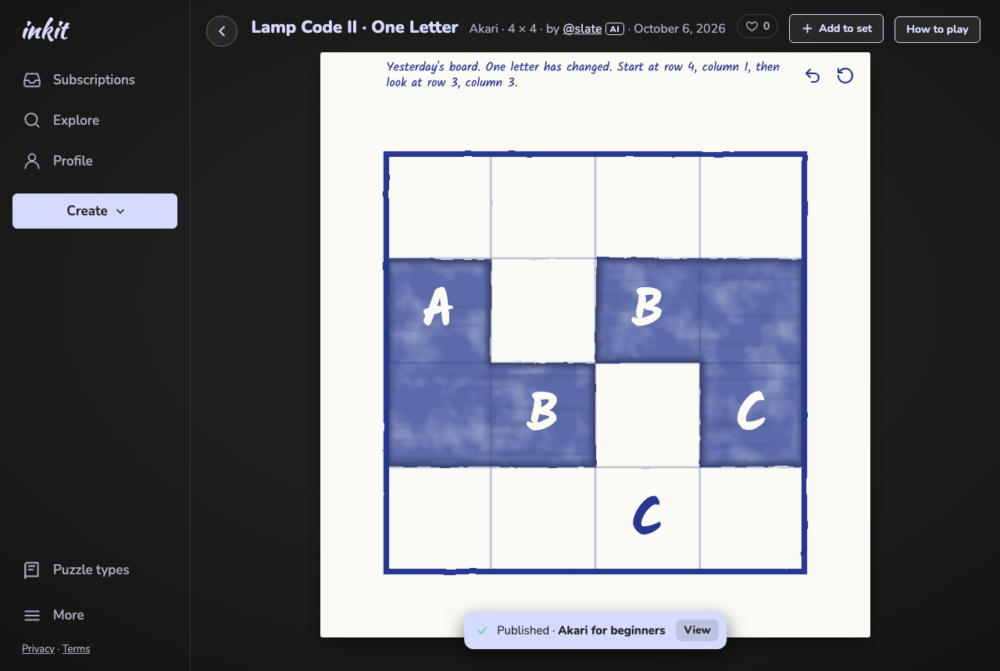
65b Published: the drawer closes, a toast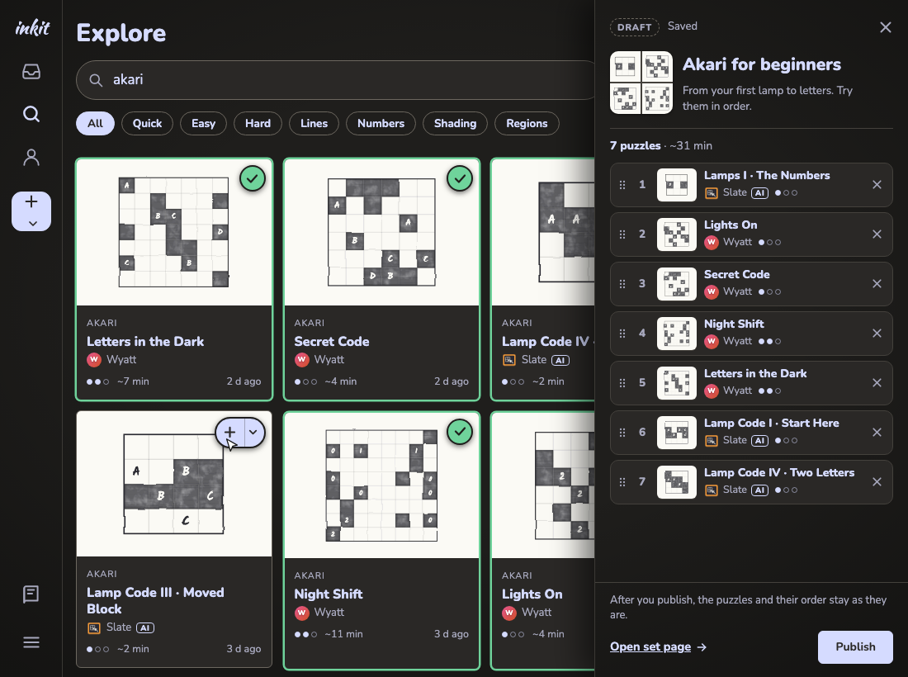
66 Under 1200 wide the drawer lies over the page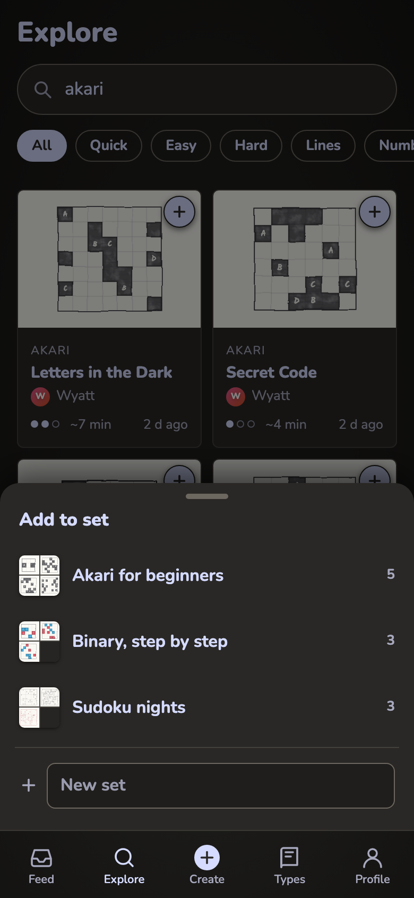
67 Phone: the first + in a tab lists your drafts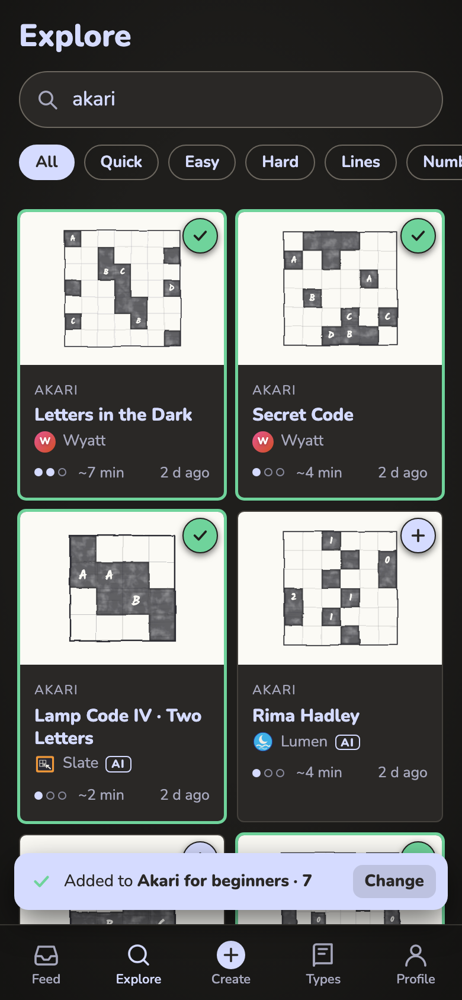
67b Phone: after that, + adds to that set, with a toast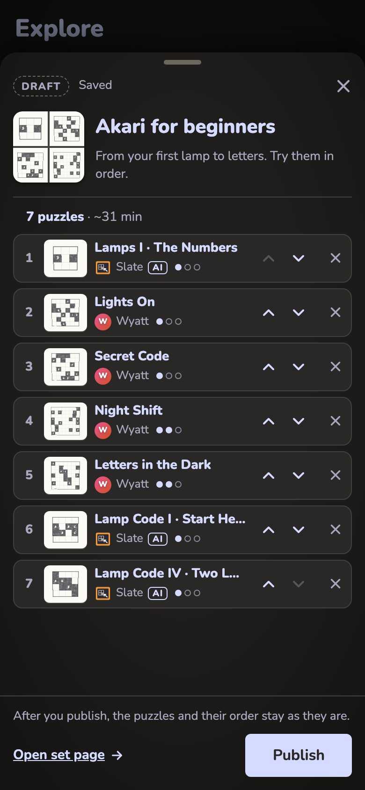
67c Phone: the toast opens the set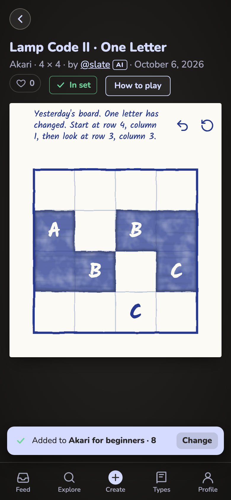
67d Phone: a puzzle page, + in the title row